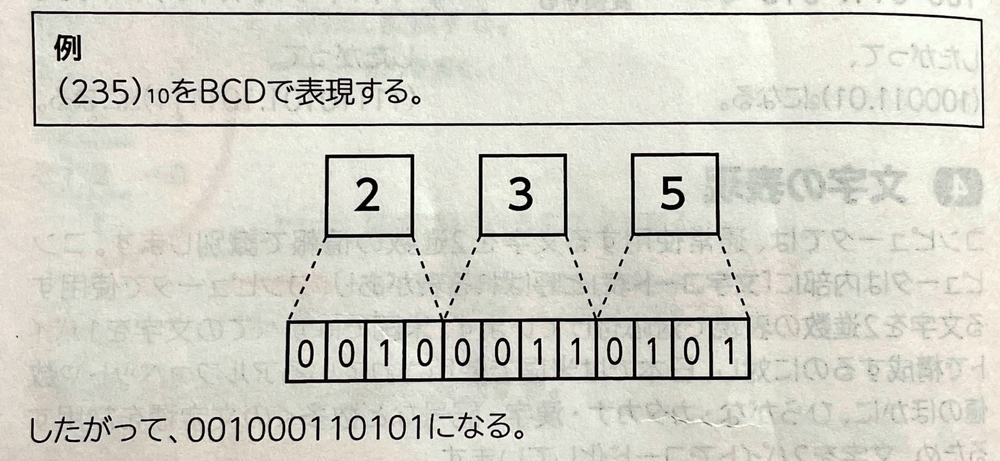
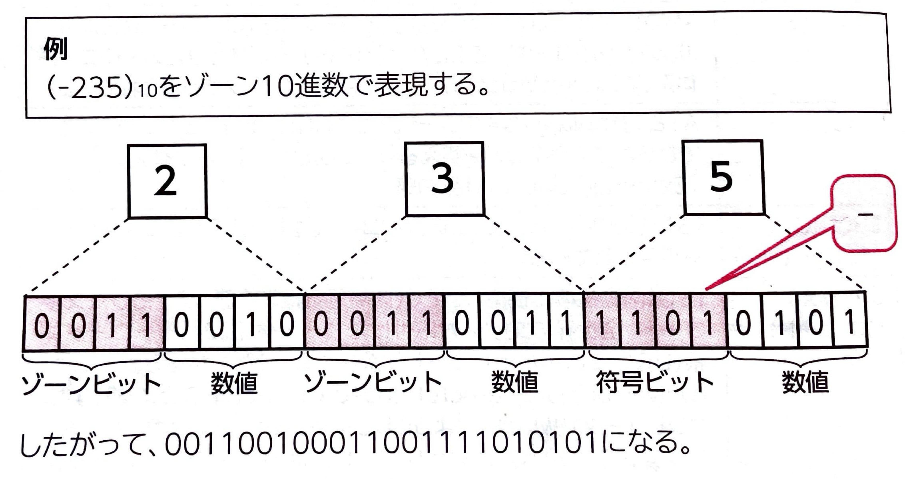
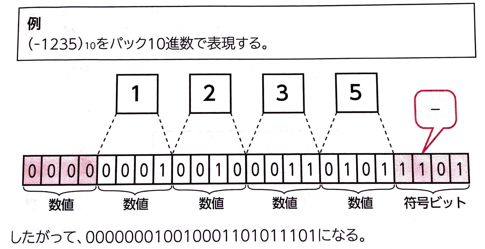
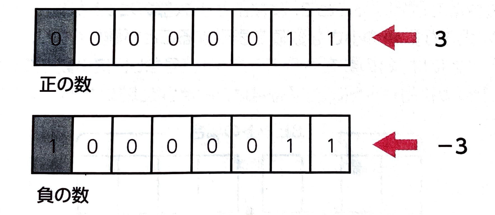
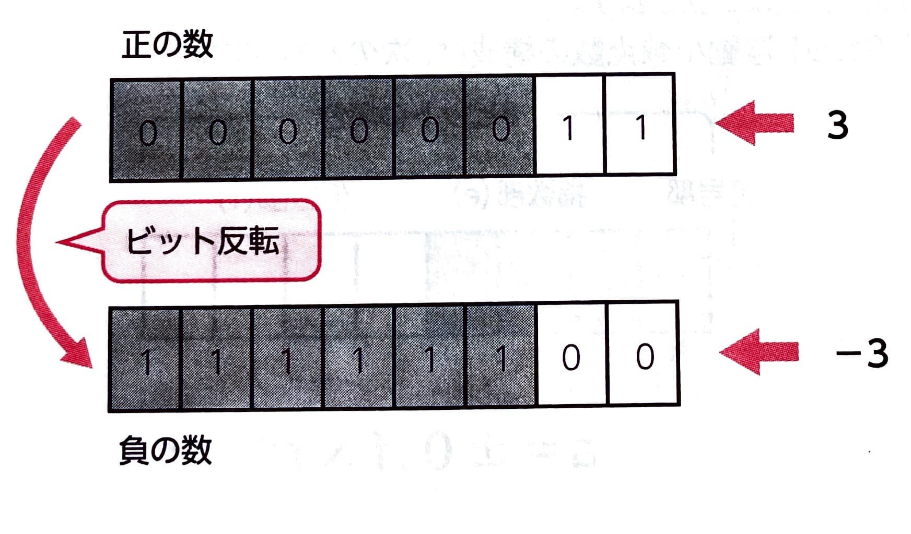
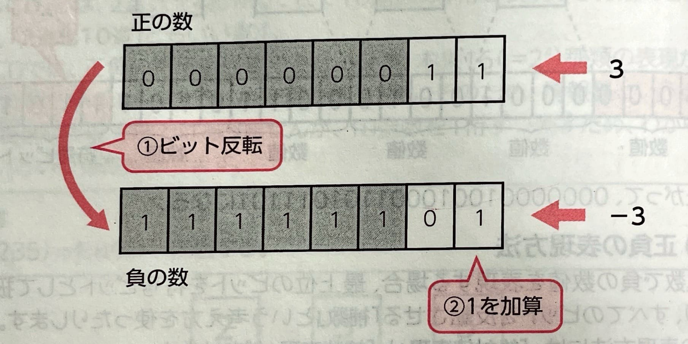
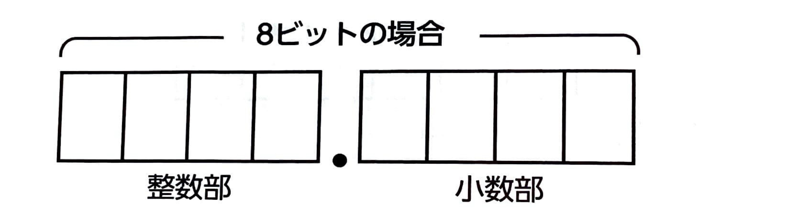
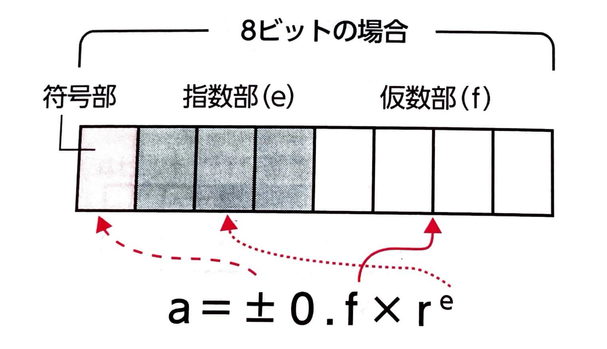
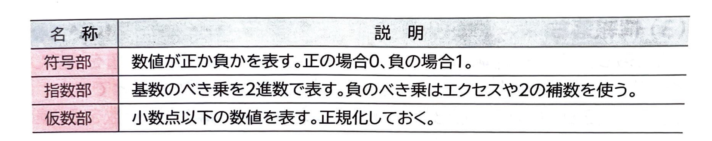
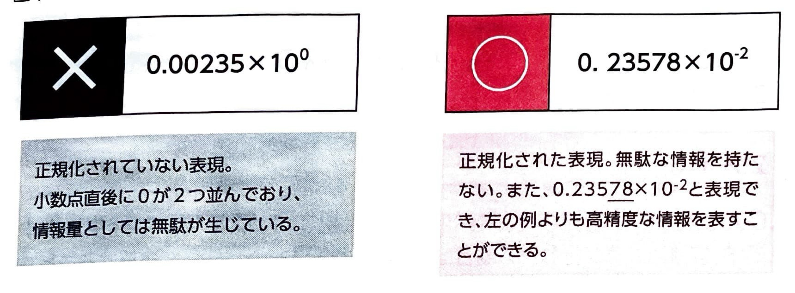

表示
｢BCD｣
とは、2進数を4桁使うことで10進数の1桁を表現する方法のことです。｢2進化10進｣
ともいいます。
｢ゾーン10進数｣
とは、1バイト(8ビット)で10進数の1桁を表現する方法のことです。1バイトのうち、上位4ビットを｢ゾーンビット｣
といい、｢0011｣
や｢1111｣
など、コンピュータ固有に定められた値を持ちます。下位4ビットは、BCDと同じ方式で0~9の数値を表現します。また、最下位桁のゾーンビットは｢符号ビット｣
といい、正負の符号を表現する役割を持っており、正の数は｢1100｣
、負の数は｢1101｣
と表現します。
｢バック10進数｣
とは、4ビットで10進数の1桁を表現する方法のことです。ただし、最下位桁の4ビットは正負の符号を表し、正の数は｢1100｣
、負の数は｢1101｣
と表現します。また、数値が偶数桁の場合だけ、先頭の4ビットに｢0000｣
を追加し、全体をバイト単位にします。
(2)正負の表現方法｢補数｣
という考え方を使ったりします。正負の表現方法には、｢絶対値表現｣
と｢補数表現｣
があります。｢絶対値表現｣
とは、最上位のビットを符号ビットとして、正の場合は0,負の場合は1と表現する方法のことです。
｢補数表現｣
とは、コンピュータなどで最もよく利用される数値の表現方法で、｢1の補数｣
と｢2の補数｣
と呼ばれる2種類の表現方法があります。｢1の補数｣
とは、ある正の数を表すビット列をすべて反転させた表現形式のことで、これを負の数として定義します。8ビットで数値を表現する場合は、1の補数では0を表すために00000000と11111111の2種類があるため、-127から127までを表現できます。
｢2の補数｣
とは、ある正の数を表すビット列をすべて反転させ、1を加算した表現形式のことで、これを負の数として定義します。8ビットで数値を表現する場合は、2の補数では0を表すために00000000のひとつしか存在しないため、-128から127までを表現できます
(3)小数の表現方法｢固定小数点数｣
と｢浮動小数点数｣
があります。｢固定小数点数｣
とは、小数点の位置を特定の位置に固定して数値を表現する方法のことです。｢符号なし固定小数点数｣
と最上位ビットが正負の符号ビットになる｢符号付き固定小数点数｣
があります。
｢浮動小数点数｣
とは、小数点の位置を移動してより詳細な数値を表現する方法のことです。一般的にコンピュータなどは、整数部と小数部を分けて数値を管理しており、小数部のデータ表現において浮動小数点数を用いています。

一般的に浮動小数点数は、小数点の直後に0以外の数値が並ぶように調整して表現します。このような表現にすることを｢浮動小数点数の正規化｣
といいます。